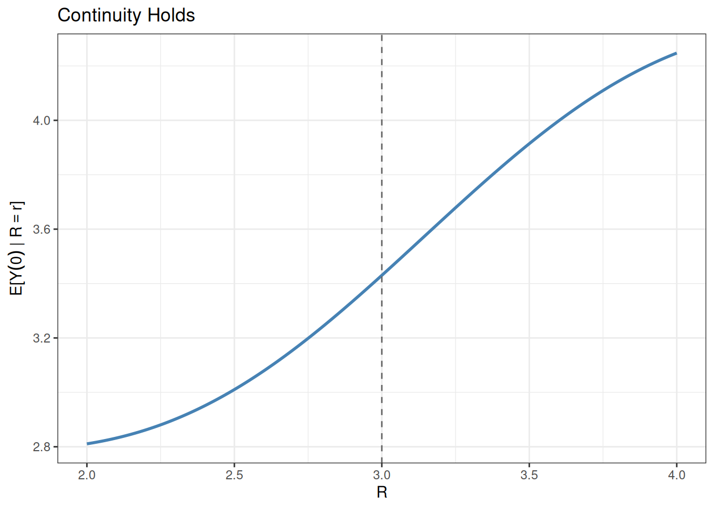
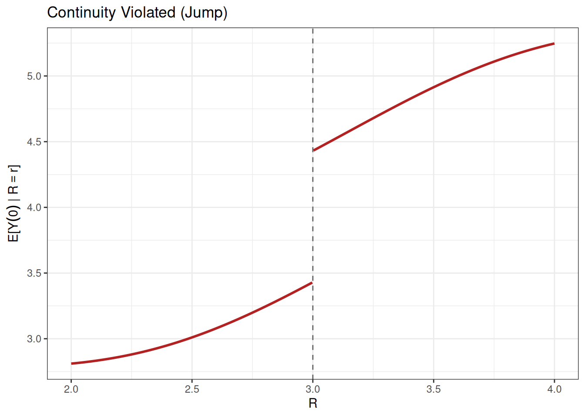
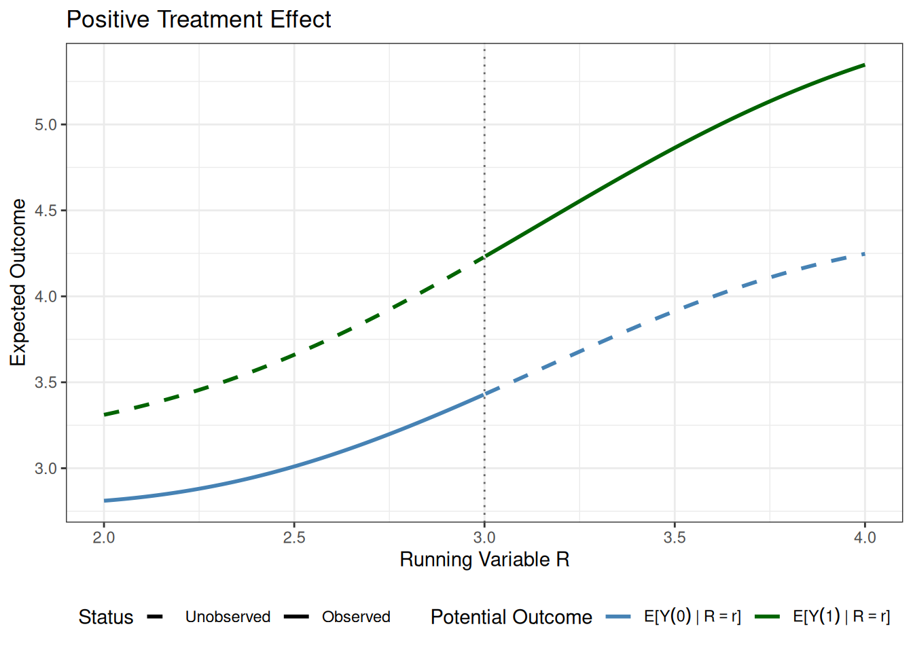
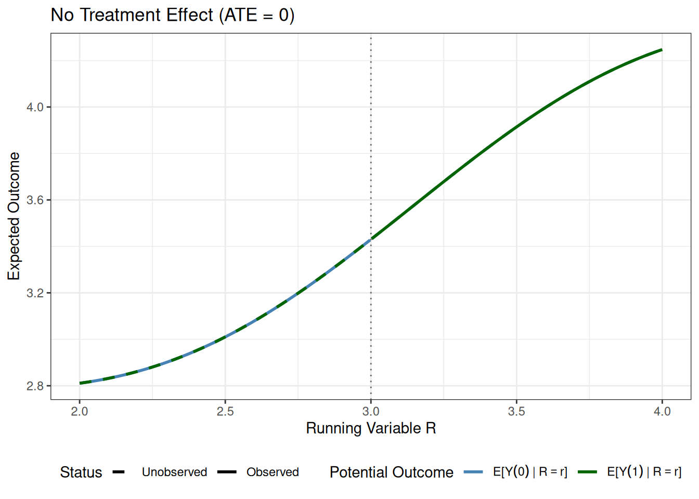
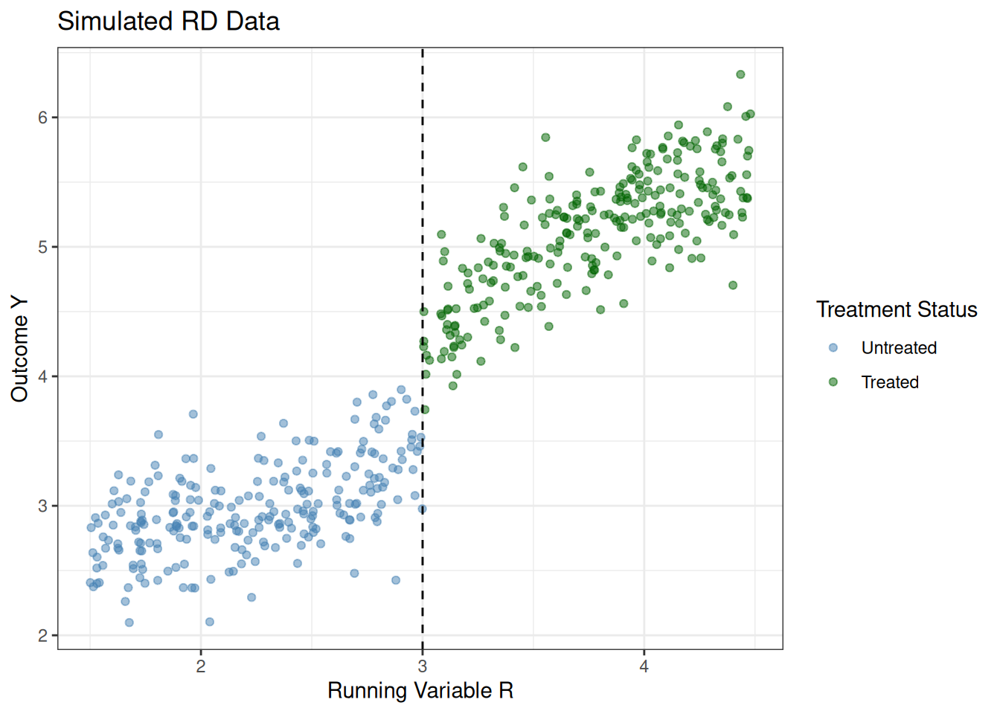
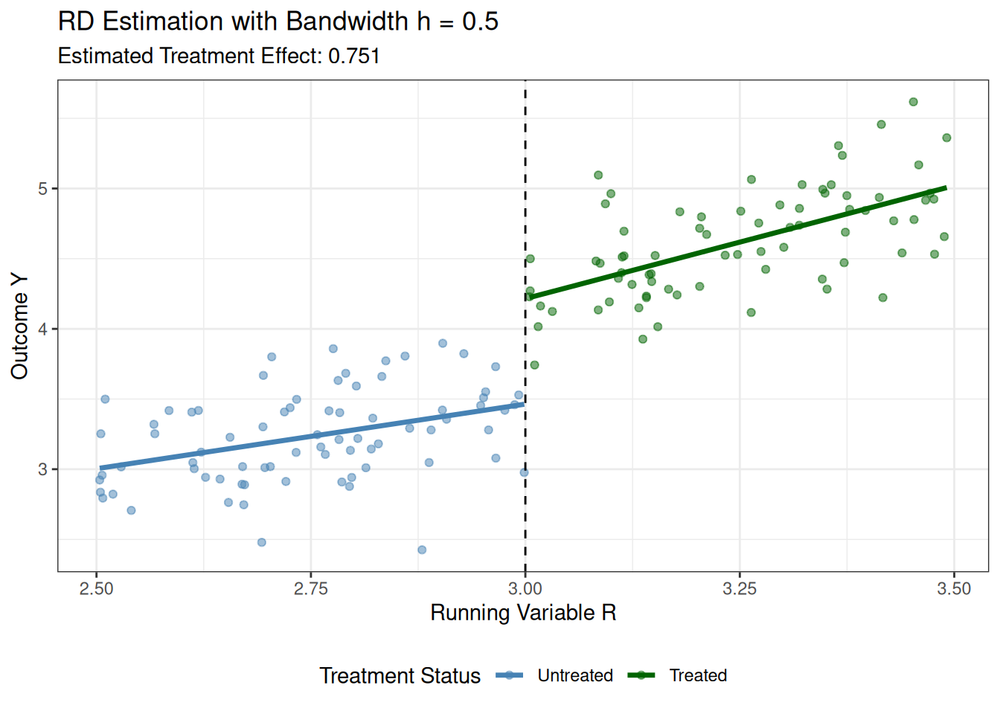
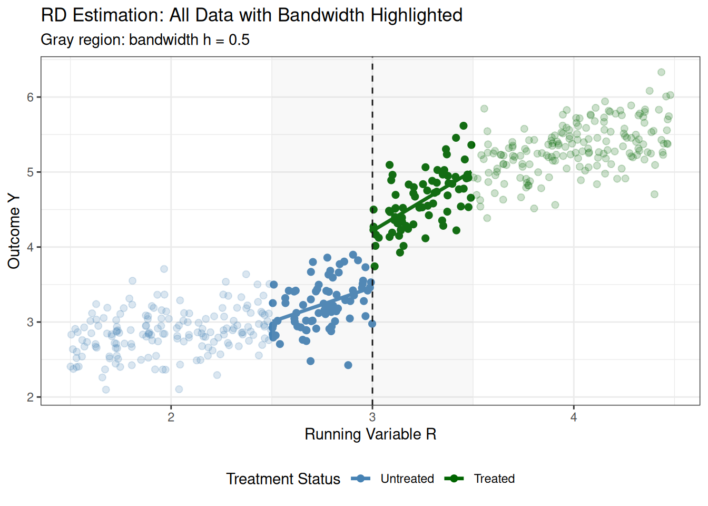

library(estimatr)
iv_model <- iv_robust(Y ~ D | Z, data = your_data)
summary(iv_model)17 Natural Experiments
\[ \newcommand{\E}{\mathbb{E}} \renewcommand{\P}{\textrm{P}} \let\L\relax \newcommand{\L}{\textrm{L}} %doesn't work in .qmd, place this command at start of qmd file to use it \newcommand{\F}{\textrm{F}} \newcommand{\var}{\textrm{var}} \newcommand{\cov}{\textrm{cov}} \newcommand{\corr}{\textrm{corr}} \newcommand{\Var}{\mathrm{Var}} \newcommand{\Cov}{\mathrm{Cov}} \newcommand{\Corr}{\mathrm{Corr}} \newcommand{\sd}{\mathrm{sd}} \newcommand{\se}{\mathrm{s.e.}} \newcommand{\T}{T} \newcommand{\indicator}[1]{\mathbb{1}\{#1\}} \newcommand\independent{\perp \!\!\! \perp} \newcommand{\N}{\mathcal{N}} \]
As discussed in the previous chapter, for a variety of reasons, it is often the case that it is infeasible to run an experiment to learn about the causal effect of some treatment of interest. In this chapter, we begin a discussion about common approaches to causal inference when an experiment is not available. In this chapter, we will consider approaches that are based on having access to a natural experiment. These are not actual experiments in the sense that the researcher randomly assigned the treatment, but rather that something happens that results in the treatment being randomly assigned—typically it is not random assignment for everyone, but rather random assignment for some subgroup.
17.1 Instrumental Variables
The most common and important natural experiment arises from having an instrumental variable (often abbreviated IV). A instrumental variable often arises when “something weird” happens that makes some individuals more likely to participate in the treatment without otherwise affecting their outcomes. This results in the treatment being effectively randomly assigned for some subgroup.
Let me give you some examples:
This is not as popular of a topic as it used to be, but many economists used to be interested in the causal effect of military service on earnings. This is challenging because individuals “self-select” into the military (i.e., individuals don’t just randomly choose to join the military, and, while there may be many dimensions of choosing to join the military, probably one dimension is what a person expects the effect to be on their future earnings).
- A famous example of an instrumental variable in this case is an individual’s Vietname draft lottery number. Here, the idea is that a randomly generated lottery number (by construction) doesn’t have any direct effect on earnings, but it does affect the chances that someone participates in the military. This is therefore a natural experiment and could serve the role of an instrumental variable.
For studying the effect of education on on earnings, researchers have used the day of birth as an instrument for years of education. The idea is that compulsory school laws are set up so that individuals can leave school when they reach a certain age (e.g., 16). But this means that, among students that want to drop out as early as they can, students who have an “early” birthday (usually around October) will have spent less time in school than students who have a “late” birthday (usually around July) at any particular age. This is a kind of natural experiment — comparing earnings of students who drop out at 16 for those who have early birthdays relative to late birthdays.
17.1.1 Setup
We will continue to denote the outcome by \(Y\) and consider the case with a binary treatment \(D\). We will also consider the case with a binary instrument \(Z\). In the military service example, \(Y\) is a person’s earnings, \(D\) indicates whether they served in the military, and \(Z\) indicates whether they were drafted. Our interest is in learning about the causal effect of \(D\) on \(Y\), exploiting that \(Z\) affects the probability of being treated and is effectively randomly assigned.
Potential Outcomes and Potential Treatments
We will continue to use the notation \(Y(1)\) and \(Y(0)\) to denote the potential outcomes. Each person has potential treatment status depending on the instrument: \(D_i(0)\) represents treatment status if not drafted, and \(D_i(1)\) represents treatment status if drafted. Similarly, each person has potential outcomes \(Y_i(0)\) and \(Y_i(1)\) corresponding to earnings if they don’t serve versus if they do serve.
17.1.2 Latent Types
Based on the pair \((D_i(0), D_i(1))\), every individual falls into one of four latent types (“latent” just means unobserved, so here we mean that every unit is one of four types, but we do not observe which type they are):
Always-takers have \(D_i(0) = 1\) and \(D_i(1) = 1\) — they serve regardless of draft status. Let \(A_i=1\) for always-takers.
Never-takers have \(D_i(0) = 0\) and \(D_i(1) = 0\) — they never serve. Let \(N_i=1\) for never-takers.
Compliers have \(D_i(0) = 0\) and \(D_i(1) = 1\) — they serve only if drafted. Let \(C_i=1\) for compliers.
Defiers have \(D_i(0) = 1\) and \(D_i(1) = 0\) — they do the opposite of what the draft tells them. Let \(F_i=1\) for defiers.
There are a couple of things that are worth pointing out about these types. First, among these types, only compliers and defiers respond to the instrument. Always-takers and never-takers have treatment status that is unaffected by the instrument. Second, defiers are somewhat strange type — for example, it seems very strange that one would serve in the military when not drafted, but avoid service when drafted. To be clear, what I mean by “strange”, is that we would not expect there to be many (or any) defiers in the military service example. That it is strange/uncommon to be a defier will be important below.
17.1.3 Four IV Assumptions
In order to recover a causal effect using an instrumental variable, we are going to make the following four assumptions. The first two essentially just formalize our discussion above. The second two could be strong in particular applications.
Relevance requires that \(\P(D(1)=1) > \P(D(0)=1)\), meaning the instrument actually affects whether or not units get treated.
Independence requires that \(Z \independent (Y(0), Y(1), D(0), D(1))\), meaning the instrument is as-good-as randomly assigned.
Exclusion Restriction requires that \(Y_i(D_i(z),z) = Y_i(D_i(z))\), meaning the instrument affects the outcome only through its effect on treatment.
Monotonicity requires that \(D_i(1) \geq D_i(0)\) for all \(i\), which rules out defiers.
The relevance condition just says that the instrumental variable affects the probability of being treated. It rules out things like using a random number generator to draw \(Z_i\) as this would not affect the treatment status. Usually this is a very mild assumption, and we can check it simply by checking whether the probability of being treated is higher when \(Z=1\) than when \(Z=0\) using our sample.
The independence assumption says that the instrument is as-good-as randomly assigned. The way we have defined a natural experiment (like in the military service example) essentially applies that this assumption holds. That being said, this assumpton does rule out just picking some variable that you happen to observe in the data and using it as an instrument. For example, suppose you were considering using whether or not someone comes from a poor family as an instrument for military service. This would likely satisfy the relevance condition, but it would likely violate independence because family income is likely correlated with unobserved determinants of earnings.
The exclusion restriction says that the instrument only affects the outcome through its effect on treatment. For many applications where the instrument is effectively randomly assigned, this is the assumption that is most likely to be violated. In the military service example, this assumption could be violated if the draft lottery affects outcomes through channels other than military service itself. This could happen if there were people who go to college if they are drafted (as a way to avoid military service) but would not go to college if they are not drafted. In this case, the draft lottery would affect earnings through education choices, violating the exclusion restriction.
Finally, monotonicity rules out defiers. As we discussed above, in many applications are the most strange latent type. Still, this assumption says that there are none at all (not just that it’s rare). To me, this assumption seems plausible in the military service example, but there are some applications where it could have more bite.
17.1.4 Identification
Next, let’s discuss how we can learn about causal effects under the setup that we have been considering. That \(Z\) is effectively randomly assigned suggests considering \[\begin{align*} \E[Y | Z=1] - \E[Y | Z=0] \end{align*}\] which compares the mean outcome for those with \(Z=1\) (e.g., drafted) to those with \(Z=0\) (e.g., not drafted). This comparison is often referred to as the reduced form effect of the instrument on the outcome. Our next goal is to relate this equation to potential outcomes. In particular, notice that \[\begin{align*} \E[Y | Z=1] &= \E[Y(D(1)) | Z=1] \\ &= \E[Y(D(1))] \end{align*}\] where the first equality holds because for those with \(Z=1\), the observed outcome is \(Y(D(1))\), and the second equality holds by the independence assumption. Using exactly the same sort of argument, it holds that \[\begin{align*} \E[Y | Z=0] &= \E[Y(D(0))] \end{align*}\] Thus, we have that \[\begin{align*} \E[Y | Z=1] - \E[Y | Z=0] &= \E[Y(D(1)) - Y(D(0))] \end{align*}\] This is the average causal effect of the instrument on the outcome. It could be of interest in some cases. For example, in the military service example, this is the average effect of being drafted on earnings. However, it is not what we originally set out to learn about: the causal effect of the treatment on the outcome. To proceed, let us use the law of iterated expectations to write: \[\begin{align*} \E[Y(D(1)) - Y(D(0))] &= \E\big[\underbrace{Y(D(1)) - Y(D(0))}_{(A)} | A=1\big] \P(A=1) \\ &+ \E\big[\underbrace{Y(D(1)) - Y(D(0))}_{(B)} | N=1\big] \P(N=1) \\ &+ \E\big[Y(D(1)) - Y(D(0)) | C=1\big] \P(C=1) \\ &+ \E\big[Y(D(1)) - Y(D(0)) | D=1\big] \underbrace{\P(F=1)}_{(C)} \end{align*}\] We can simplify this expression significantly:
For underlined term (A), always-takers have \(D(1)=D(0)=1\), so \(Y(D(1)) = Y(1)\) and \(Y(D(0)) = Y(1)\), i.e., regardless of the value of the instrument that an always-taker experiences, their observed outcome is \(Y(1)\). Therefore, the underlined term equals zero.
For underlined term (B), never-takers have \(D(1)=D(0)=0\), so \(Y(D(1)) = Y(0)\) and \(Y(D(0)) = Y(0)\), and this term is also equal to zero using a similar argument as for always-takers.
For underlined term (C), recall that monotonicity ruled out the existence of defiers, and, therefore, \(\P(F=1) = 0\).
Putting this all together, we have that \[\begin{align*} \E[Y | Z=1] - \E[Y | Z=0] &= \E[Y(1) - Y(0) | C=1] \P(C=1) \end{align*}\] This is a helpful step as we have now expressed the reduced form effect in terms of potential outcomes of the treatment itself, which is a causal effect. The last thing that we would like to do is to try to get rid of the \(\P(C=1)\) term as it is mainly just “scaling down” the causal effect term. To do this, we will consider \[\begin{align*} \E[D | Z=1] - \E[D | Z=0] \end{align*}\] which compares the probability of being treated for those with \(Z=1\) to those with \(Z=0\). This comparison is often referred to as the first stage effect of the instrument on the treatment. Using a similar argument as above, we can write \[\begin{align*} \E[D | Z=1] - \E[D | Z=0] &= \E[D(1) - D(0)] \\ &= \E\big[\underbrace{D(1) - D(0)}_{=0} | A=1\big] \P(A=1) \\ &+ \E\big[\underbrace{D(1) - D(0)}_{=0} | N=1\big] \P(N=1) \\ &+ \E\big[\underbrace{D(1) - D(0)}_{=1} | C=1\big] \P(C=1) \\ &+ \E\big[D(1) - D(0) | D=1\big] \underbrace{\P(F=1)}_{0} \\ &= \P(C=1) \end{align*}\] This argument is extremely similar (and easier) than for the reduced form effect. For compliers, notice that \(D(1)=1\) and \(D(0)=0\), so \(D(1) - D(0) = 1\). Finally, we can combine the reduced form and first stage results: \[\begin{align*} \frac{\E[Y | Z=1] - \E[Y | Z=0]}{\E[D | Z=1] - \E[D | Z=0]} &= \frac{\E[Y(1) - Y(0) | C=1] \P(C=1)}{\P(C=1)} \\ &= \E[Y(1) - Y(0) | C=1] \end{align*}\] This is our main result. It says that taking the ratio of the reduced form effect to the first stage effect recovers the average treatment effect for the compliers. The average treatment effect for compliers is often referred to as the local average treatment effect (LATE) as it is the average treatment effect for a specific subpopulation (the compliers). The ratio of the reduced form to the first stage is often referred to as the Wald ratio.
17.1.5 Estimation
Estimating the LATE is fairly straightforward. We can just use the analogy principle. In particular, \[\begin{align*} \widehat{LATE} &= \frac{\bar{Y}_{Z=1} - \bar{Y}_{Z=0}}{\bar{D}_{Z=1} - \bar{D}_{Z=0}} \end{align*}\] where \(\bar{Y}_{Z=z}\) is the sample mean of \(Y\) among those with \(Z=z\), and \(\bar{D}_{Z=z}\) is the sample mean of \(D\) among those with \(Z=z\).
Although this is straightforward, in practice, it will be more convenient to use a package to make the calculation for you, as it will also calculate standard errors. You can use code like the following, where your_data is your data frame, Y is the outcome variable, D is the treatment variable, and Z is the instrument variable.
17.2 Regression Discontinuity Designs
SW 13.4
The final type of natural experiment that we will talk about is called regression discontinuity (often abbreviated RD or RDD for “regression discontinuity design”). The sort of natural experiment is available when there is a running variable with a threshold (i.e., cutoff) where individuals above the threshold are treated while individuals below the threshold are not treated. These sorts of thresholds/cutoffs are fairly common.
Here are some examples:
Cutoffs that make students eligible for a scholarship (e.g., the Hope scholarship)
Rules about maximum numbers of students allowed in a classroom in a particular school district
Very close political elections
Very close union elections
Thresholds in tax laws
Then, the idea is to compare outcomes among individuals that “barely” were treated relative to those that “barely” weren’t treated. By construction, this often has properties that are similar to an actual experiment as those that are just above the cutoff should have observed and unobserved characteristics that are the same as those just below the cutoff.
In some sense, RD is a special case of instrumental variables; however, discontinuities are common enough in economics that it is worth considering these approaches specifically.
Let’s explain the intuition for RD in the context of a particular example. Suppose that you are interested in how financial aid (a treatment) affects college completion. Policies like the Hope scholarship provide financial aid to students whose high school GPA is above a certain cutoff (e.g., 3.0). Students with GPAs just above 3.0 receive the treatment, while students with GPAs just below 3.0 do not. In the terminology of regression discontinuity, the student’s GPA is called a running variable, which we will denote by \(R_i\). The cutoff is denoted by \(c\) (in this case, \(c = 3.0\)). Treatment status \(D_i\) is determined by whether the running variable exceeds the cutoff: \(D_i = 1\) if \(R_i \geq c\) and \(D_i = 0\) if \(R_i < c\). We will end up comparing the average college completion rates for students with GPAs just above 3.0 to those with GPAs just below 3.0, and argue below that this comparison identifies the causal effect of financial aid on college completion for students at the cutoff.
17.2.1 Key Assumption: Continuity
The RD design relies on a continuity assumption about potential outcomes. In particular, we assume that \[\begin{align*} \E[Y(1) | R = r] \text{ and } \E[Y(0) | R = r] \text{ are continuous in } r \end{align*}\] In particular, we need this assumption to hold at the cutoff \(c\). Below is a plot that illustrates the continuity assumption for untreated potential outcomes, \(\E[Y(0)|R=r]\). You can see that this function is continuous everywhere.
In the context of our financial aid example where college completion is the outcome, this function says that, absent any financial aid, the expected college completion rate is increasing in GPA, but there are not any sudden jumps in college completion rates.
You should probably think of continuity as being a mild assumption (with one main possible caveat that we will discuss below). In our example, students with GPAs of 2.99 and 3.01 are likely very similar in terms of their underlying ability and motivation, so we would expect their college completion rates to be similar absent financial aid.


Next, let’s consider a plot where the continuity assumption is violated. This second plot shows a clear violation: a jump at the cutoff. In many applications, such a jump seems implausible. However, there is one leading case where a jump can occur: when individuals can manipulate the value of their running variable. For example, suppose that some students are highly motivated and strategically select courses to boost their GPA if they have a GPA near the cutoff (presumably this kind of motivation could also increase college completion rates). This could lead to a ``pile-up’’ of highly motivated students just above the cutoff, leading to a jump in the underlying potential outcomes at the cutoff.
Manipulation is a concern in RD designs especially when the running variable is something that individuals can, at least to some extent, control—like GPA in the example above. A different classic RD design involves studying the effect of legal drinking age on mortality, where the running variable is age in years (with a cutoff at age 21). Individuals cannot manipulate their birth date to turn 21 sooner, so manipulation is much less of a concern in this type of application.
17.2.2 Identification
Next, let’s work through what we can learn about the causal effect of the treatment when we have access to a discontinuity. To start with, let us think about what the observed data would look like if the treatment caused outcomes to increase on average.

Recall that we observe treated potential outcomes for \(R_i \geq c\) and untreated potential outcomes for \(R_i < c\). This coresponds to the solid lines in the plots above. The dashed lines correspond to the unobserved counterfactual potential outcomes. Importantly, notice that there is a discontinuity in the observed outcomes at the cutoff.
Next, let’s consider what the same plot would look like if there were no treatment effect.

In this plot, which may be a bit hard to interpret because the lines are on top of each other, the main thing to notice is that there is no discontinuity at the cutoff.
The discussion above suggests that we can learn about the causal effect of the treatment by “zooming in” on the cutoff and checking for a discontinuity (as well as checking the magnitude of the discontinuity).
In particular, consider \[\begin{align*} \tau^{RD} := \lim_{r \downarrow c} \E[Y | R = r] &- \lim_{r \uparrow c} \E[Y | R = r] \end{align*}\] \(\tau^{RD}\) comes from comparing the expected outcomes just above and just below the cutoff. Notice that \[\begin{align*} \tau^{RD} &= \lim_{r \downarrow c} \E[Y | R = r] - \lim_{r \uparrow c} \E[Y | R = r] \\ &= \lim_{r \downarrow c} \E[Y(1) | R = r] - \lim_{r \uparrow c} \E[Y(0) | R = r] \\ &= \E[Y(1) | R = c] - \E[Y(0) | R = c] \\ &= \E[Y(1) - Y(0) | R = c] \end{align*}\] where the second equality holds by writing the observed outcomes in terms of potential outcomes, and the third equality (which is the key step) holds by the continuity assumption. The result is that \(\tau^{RD} = \E[Y(1) - Y(0) | R = c]\), which is a local average average treatment effect for individuals at the cutoff.
Intuitively, you can think of regression discontinuity as delivering a local experiment where individuals just above and just below the cutoff are effectively randomly assigned to treatment and control groups.
17.2.3 Estimation
From the discussion above, it may be unclear how to estimate \(\tau^{RD}\) in practice. In particular, it is not clear how to deal with the limits in the definition of \(\tau^{RD}\). In fact, I think RD is the first and only time this semester where we won’t directly use the analogy principle to estimate a parameter of interest (due to the limits). To deal with the limits, instead of using all of the data, we will only use data that is “close” to the cutoff. In particular, we will only use data where \(R_i\) is in the interval \([c - h, c + h]\) for some bandwidth parameter \(h > 0\)—this bandwidth parameter basically determines what we mean by close. Once we have decided on \(h\), if you are a little clever, you can estimate \(\tau^{RD}\) from a regression. In particular, you can run the following regression using only data in that interval: \[\begin{align*} Y_i = \beta_0 + \beta_1 (R_i-c) + \big(\beta_2 + \beta_3 (R_i-c)\big) D_i + U_i \end{align*}\] This is a regression where we (1) “center” at c, and (2) we allow for the intercept and slope coefficients to be different on each side of the cutoff. In particular, \(\hat{\beta}_2\) is our estimate of \(\tau^{RD}\).
17.2.4 Example with Simulated Data
To illustrate how RD estimation works in practice, let me show you an example with simulated data roughly in line with the financial aid example that we have been discussing.

Now let’s estimate the treatment effect using a bandwidth of \(h = 0.5\) (meaning we only use observations within 0.5 units of the cutoff on either side).
# Choose bandwidth
h <- 0.5
# Restrict to observations within bandwidth
rd_data_bw <- rd_data %>% filter(abs(R - c) <= h)
# Estimate RD regression
rd_reg <- lm(Y ~ D + I(R - c) + D:I(R - c), data = rd_data_bw)
summary(rd_reg)
Call:
lm(formula = Y ~ D + I(R - c) + D:I(R - c), data = rd_data_bw)
Residuals:
Min 1Q Median 3Q Max
-0.92775 -0.18555 -0.02267 0.20556 0.74318
Coefficients:
Estimate Std. Error t value Pr(>|t|)
(Intercept) 3.46402 0.07083 48.909 < 2e-16 ***
D 0.75128 0.09851 7.626 2.7e-12 ***
I(R - c) 0.92051 0.24634 3.737 0.000266 ***
D:I(R - c) 0.69026 0.34369 2.008 0.046421 *
---
Signif. codes: 0 '***' 0.001 '**' 0.01 '*' 0.05 '.' 0.1 ' ' 1
Residual standard error: 0.3017 on 148 degrees of freedom
Multiple R-squared: 0.8522, Adjusted R-squared: 0.8492
F-statistic: 284.4 on 3 and 148 DF, p-value: < 2.2e-16The estimated treatment effect is 0.751, which we can compare to the true treatment effect at the cutoff of \(0.8 + 0.3 \times 0 = 0.8\).
What we’ve done with this regression is, effectively, to have run separate regression for the treated and untreated groups within the bandwidth, allowing for linear trends in \(R\). The intercept shift at the cutoff (the coefficient on \(D\)) gives us our estimate of the treatment effect.

The plot shows the fitted regression lines for treated and untreated observations within the bandwidth. The vertical gap between the two lines at the cutoff (the intercept shift) is our estimate of the treatment effect.
Finally, notice that we’re only using observations close to the cutoff (those within the bandwidth). We can zoom out to see all the data, and, in particular, notice that we are dropping a lot of data that is far from the cutoff—this typical in RD applications where the focus is local to the cutoff.

This visualization shows all the data but highlights the observations within the bandwidth (which appear more opaque) and shows the fitted regression lines. The shaded gray region indicates the bandwidth around the cutoff. This makes it clear that we’re only using local information near the cutoff to estimate the treatment effect.
17.3 References
Cunningham, Scott. 2021. Causal Inference: The Mixtape. Yale University Press.
Side Comment: Instrumental variables has a strong claim for being the main contribution of econometrics to statistics. It dates back to the work of Philip Wright in the 1920s on supply and demand estimation in agricultural markets – it is more difficult than you might at first think to estimate supply and demand curves. And I think that it is fair to say that a lot of approaches to causal inference can be considered as a variation of instrumental variables. Cunningham (2021) has a good and interesting discussion of the history of instrumental variables in economics.